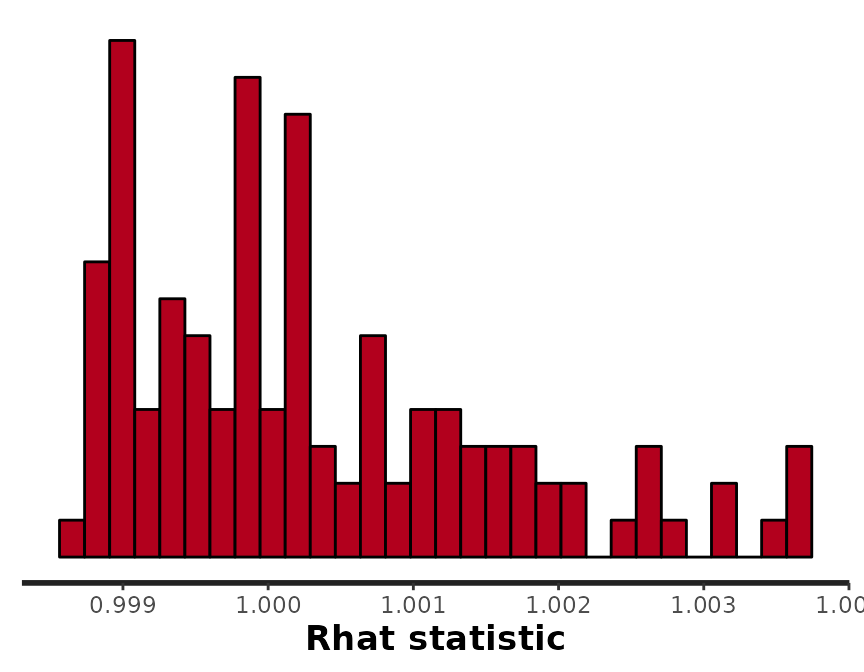
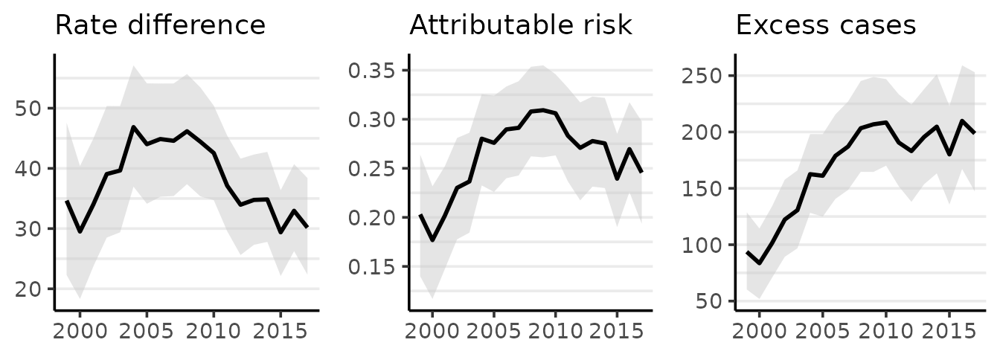
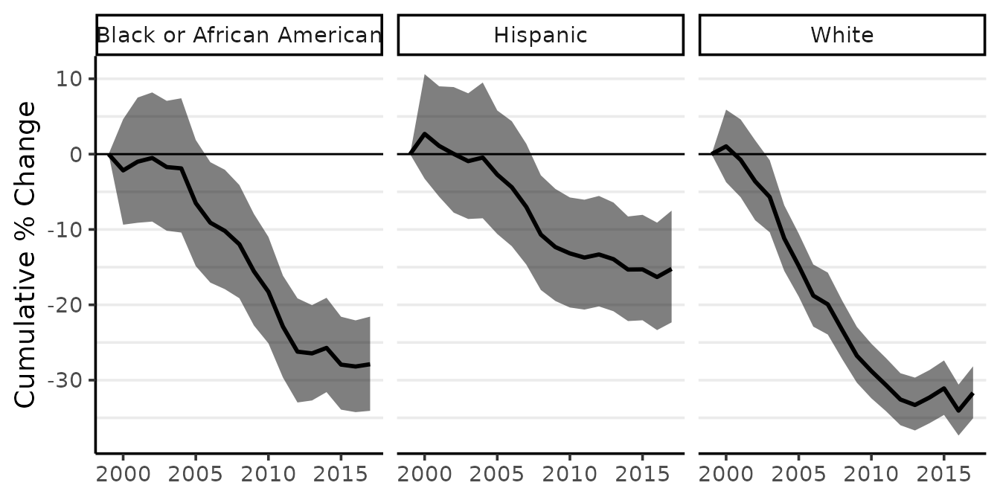

This vignette demonstrates basic usage of surveil for public health surveillance. surveil leverages the principles of Bayesian inference and Markov chain Monte Carlo (MCMC) (MacKay 2003; Gelman et al. 2014) to infer population risk of disease or death given time series data consisting of case counts and population at risk. Models were built using the Stan modeling language, but users only need to be familiar with the R language.
The package also contains special methods for age-standardization, printing and plotting model results, and for measuring and visualizing health inequalities. For age-standardization see vignette("age-standardization"). For discussion and demonstration analysis see Donegan, Hughes, and Lee (2022).
Getting started
Surveillance data minimally contain case counts, reliable population at risk estimates, and a discrete time period variable. They also may include one or more grouping variables, such as race-ethnicity.Time periods should consist of equally spaced intervals.
This vignette analyzes age-specific (ages 50-79) colorectal cancer incidence data by race-ethnicity, year, and Texas MSA, obtained through CDC Wonder. The race-ethnicity grouping includes (non-Hispanic) Black, (non-Hispanic) White, and Hispanic, and the MSAs include those centered on the cities of Austin, Dallas, Houston, and San Antonio.
head(msa) %>%
kable(booktabs = TRUE,
caption = "Glimpse of colorectal cancer incidence data (CDC Wonder)") | Year | Race | MSA | Count | Population |
|---|---|---|---|---|
| 1999 | Black or African American | Austin-Round Rock, TX | 28 | 14421 |
| 2000 | Black or African American | Austin-Round Rock, TX | 16 | 15215 |
| 2001 | Black or African American | Austin-Round Rock, TX | 22 | 16000 |
| 2002 | Black or African American | Austin-Round Rock, TX | 24 | 16694 |
| 2003 | Black or African American | Austin-Round Rock, TX | 34 | 17513 |
| 2004 | Black or African American | Austin-Round Rock, TX | 26 | 18429 |
surveil’s model fitting function, stan_rw, requires that the user provide a data.frame with specific column names. There must be one column named Count containing case counts, and another column named Population, containing the sizes of the populations at risk. The user must provide the name of the column containing the time period, and may optionally provide a grouping factor. For the MSA data printed above, the grouping column is Race and the time column is Year.
Preparing the data
We will demonstrate using aggregated CRC cases across Texas’s top four MSAs. The msa data from CDC Wonder already has the necessary format (column names and contents), but these data are dis-aggregated by MSA. So for this analysis, we first group the data by year and race, and then combine cases across MSAs.
The following code chunk aggregates the data using the dplyr package:
tx.msa <- msa %>%
group_by(Year, Race) %>%
summarise(Count = sum(Count),
Population = sum(Population))The following code provides a glimpse of the aggregated data (Table 2):
head(tx.msa) %>%
kable(booktabs = TRUE,
caption = "Glimpse of aggregated Texas metropolitan CRC cases, by race and year")| Year | Race | Count | Population |
|---|---|---|---|
| 1999 | Black or African American | 471 | 270430 |
| 1999 | Hispanic | 361 | 377471 |
| 1999 | White | 2231 | 1654251 |
| 2000 | Black or African American | 455 | 283280 |
| 2000 | Hispanic | 460 | 405562 |
| 2000 | White | 2343 | 1704425 |
Model specification
The basics
The base surveil model is specified as follows. The Poisson model is used as the likelihood: the probability of observing a given number of cases, \(y_t\), conditional on a given level of risk, \(e^{\phi_t}\), and known population at risk, \(p_t\), is: \[y_t \sim \text{Pois}(p_t \cdot e^{\phi_t})\] where \(t\) indexes the time period.
Alternatively, the binomial model is available: \[y_t \sim \text{Binom}(p_t \cdot g^{-1}(\phi_t))\] where \(g\) is the logit function and \(g^{-1}(x) = \frac{exp(x)}{1 + exp(x)}\) (the inverse-logit function). The Poisson model is often preferred for ‘rare’ events (such as rates below .01), otherwise the binomial model is generally more appropriate. The remainder of this vignette will proceed using the Poisson model only.
Next, we build a model for the log-rates, \({\phi_t}\) (for the binomial model, the rates are logit-transformed, rather than log-transformed). The first-difference prior states that our expectation for the log-rate at any time is its previous value, and we assign a Gaussian probability distribution to deviations from the previous value (Clayton 1996). This is also known as the random-walk prior: \[\phi_t \sim \text{Gau}(\phi_{t-1}, \tau^2)\] This places higher probability on a smooth trend through time, specifically implying that underlying disease risk tends to have less variation than crude incidence.
The log-risk for time \(t=1\) has no previous value to anchor its expectation; thus, we assign a prior probability distribution directly to \(\phi_1\). For this prior, surveil uses a Gaussian distribution. The scale parameter, \(\tau\), also requires a prior distribution, and again surveil uses a Gaussian model.
Multiple time series
For multiple time series, surveil allows users to add a correlation structure to the model. This allows our inferences about each population to be mutually informed by inferences about all other observed populations. Note that in many cases, the base model specification described above will be entirely sufficient.
The log-rates for \(k\) populations, \(\boldsymbol \phi_t\), are assigned a multivariate Gaussian model (Brandt and Williams 2007): \[\boldsymbol \phi_t \sim \text{Gau}(\boldsymbol \phi_{t-1}, \boldsymbol \Sigma),\] where \(\boldsymbol \Sigma\) is a \(k \times k\) covariance matrix.
The covariance matrix can be decomposed into a diagonal matrix containing scale parameters for each variable, \(\boldsymbol \Delta = diag(\tau_1,\dots \tau_k)\), and a symmetric correlation matrix, \(\boldsymbol \Omega\) (Stan Development Team 2021): \[\boldsymbol \Sigma = \boldsymbol \Delta \boldsymbol \Omega \boldsymbol \Delta\] When the correlation structure is added to the model, then a prior distribution is also required for the correlation matrix. surveil uses the LKJ model, which has a single shape parameter, \(\eta\) (Stan Development Team 2021). If \(\eta=1\), the LKJ model will place uniform prior probability on any \(k \times k\) correlation matrix; as \(\eta\) increases from one, it expresses ever greater skepticism towards large correlations. When \(\eta <1\), the LKJ model becomes ‘concave’—expressing skepticism towards correlations of zero.
Fitting the model
The time series model is fit by passing surveillance data to the stan_rw function. Here, Year and Race indicate the appropriate time and grouping columns in the tx.msa data frame.
fit <- stan_rw(tx.msa,
time = Year,
group = Race,
iter = 1500,
chains = 2 #, for speed only; use default chains=4
)
#> Distribution: normal
#> Distribution: normal
#> [1] "Setting normal prior(s) for eta_1: "
#> location scale
#> -6 5
#> [1] "\nSetting half-normal prior for sigma: "
#> location scale
#> 0 1
#>
#> SAMPLING FOR MODEL 'RW' NOW (CHAIN 1).
#> Chain 1:
#> Chain 1: Gradient evaluation took 2.5e-05 seconds
#> Chain 1: 1000 transitions using 10 leapfrog steps per transition would take 0.25 seconds.
#> Chain 1: Adjust your expectations accordingly!
#> Chain 1:
#> Chain 1:
#> Chain 1: Iteration: 1 / 1500 [ 0%] (Warmup)
#> Chain 1: Iteration: 751 / 1500 [ 50%] (Sampling)
#> Chain 1: Iteration: 1500 / 1500 [100%] (Sampling)
#> Chain 1:
#> Chain 1: Elapsed Time: 0.49 seconds (Warm-up)
#> Chain 1: 0.33 seconds (Sampling)
#> Chain 1: 0.82 seconds (Total)
#> Chain 1:
#>
#> SAMPLING FOR MODEL 'RW' NOW (CHAIN 2).
#> Chain 2:
#> Chain 2: Gradient evaluation took 1.5e-05 seconds
#> Chain 2: 1000 transitions using 10 leapfrog steps per transition would take 0.15 seconds.
#> Chain 2: Adjust your expectations accordingly!
#> Chain 2:
#> Chain 2:
#> Chain 2: Iteration: 1 / 1500 [ 0%] (Warmup)
#> Chain 2: Iteration: 751 / 1500 [ 50%] (Sampling)
#> Chain 2: Iteration: 1500 / 1500 [100%] (Sampling)
#> Chain 2:
#> Chain 2: Elapsed Time: 0.538 seconds (Warm-up)
#> Chain 2: 0.337 seconds (Sampling)
#> Chain 2: 0.875 seconds (Total)
#> Chain 2:If we wanted to add a correlation structure to the model, we would add cor = TRUE (as opposed to the default, cor = FALSE). To speed things up, we could take advantage of parallel processing using the cores argument (e.g., add cores = 4) to run on 4 cores simultaneously. For age-standardization, see vignette("age-standardization").
MCMC diagnostics
In this case, Stan did not issue any warnings; this means that all the R-hat values are near to 1 and the Monte Carlo standard errors are reasonably small. We can verify that chains have converged (and R-hats equal about 1):
rstan::stan_rhat(fit$samples)
#> `stat_bin()` using `bins = 30`. Pick better value with `binwidth`.
Other useful functions for examining MCMC diagnostics are rstan::stan_ess(fit$samples) and rstan::stan_mcse(fit$samples). For an introduction to MCMC analysis with surveil, including MCMC diagnostics, see the vignette vignette("surveil-mcmc").
Visualizing results
If we call plot on a surveil model, we get a ggplot object depicting risk estimates with 95% credible intervals:
plot(fit, scale = 100e3, base_size = 11)
#> Plotted rates are per 100,000Crude incidence rates are also plotted as points.
The plot method has a number of options to control its appearance. For example, the base_size argument controls the size of labels. The size of the points for the crude rates can be adjusted using size, and size = 0 removes them altogether. We can also use ggplot to add custom modifications:
fig <- plot(fit, scale = 100e3, base_size = 11, size = 0)
#> Plotted rates are per 100,000
fig +
theme(legend.position = "right") +
labs(title = "CRC incidence per 100,000",
subtitle = "Texas MSAs, 50-79 y.o.")
The plot method has a style argument that controls how the probability distribution is represented. The default, style = "mean_qi", shows the mean of the posterior distribution of the risk at each time period with a shaded 95% credible interval (as above). The alternative, style = "lines", plots MCMC samples from the joint probability distribution across all time periods:
plot(fit, scale = 100e3, base_size = 11, style = "lines")
#> Plotted rates are per 100,000
By default, M = 250 samples are plotted. The style option is available for all of the surveil plot methods.
Printing results
The print method will print the estimates with 95% credible intervals to the console:
print(fit, scale = 100e3)
#> Summary of surveil model results
#> Time periods: 19
#> Grouping variable: Race
#> Correlation matrix: FALSE
#> time Race mean lwr_2.5 upr_97.5
#> 1 1999 Black or African American 170.09931 158.09130 182.22771
#> 2 2000 Black or African American 166.35095 156.32243 176.56795
#> 3 2001 Black or African American 168.26786 158.50435 178.34822
#> 4 2002 Black or African American 169.23187 159.81591 179.12017
#> 5 2003 Black or African American 167.15604 157.58551 177.24145
#> 6 2004 Black or African American 166.85675 157.20365 176.91472
#> 7 2005 Black or African American 159.05704 150.18341 167.46911
#> 8 2006 Black or African American 154.50993 145.79650 163.56521
#> 9 2007 Black or African American 152.53522 144.96703 161.08950
#> 10 2008 Black or African American 149.51767 141.41321 158.13694
#> 11 2009 Black or African American 143.50410 135.82854 151.30291
#> 12 2010 Black or African American 138.84876 131.63502 146.62930
#> 13 2011 Black or African American 130.98992 124.32892 137.77578
#> 14 2012 Black or African American 125.27753 118.23194 131.90269
#> 15 2013 Black or African American 124.92074 118.01848 131.82065
#> 16 2014 Black or African American 126.27768 119.49126 133.65171
#> 17 2015 Black or African American 122.60899 115.72430 129.26868
#> 18 2016 Black or African American 122.13840 116.07136 128.64495
#> 19 2017 Black or African American 122.67478 115.78615 129.95286
#> 20 1999 Hispanic 101.55146 94.73596 108.69040
#> 21 2000 Hispanic 104.25114 98.20376 111.01166
#> 22 2001 Hispanic 102.57382 97.39754 108.20977
#> 23 2002 Hispanic 101.58040 96.08511 107.41582
#> 24 2003 Hispanic 100.58029 95.14669 106.03364
#> 25 2004 Hispanic 100.93441 96.04959 106.52098
#> 26 2005 Hispanic 98.71661 93.68289 104.08567
#> 27 2006 Hispanic 96.85269 92.13799 101.67850
#> 28 2007 Hispanic 94.21666 89.68871 98.98098
#> 29 2008 Hispanic 90.47452 85.56317 95.29716
#> 30 2009 Hispanic 88.81626 84.05870 93.23111
#> 31 2010 Hispanic 87.97461 83.56999 92.21312
#> 32 2011 Hispanic 87.43417 83.30700 91.26391
#> 33 2012 Hispanic 87.81860 83.82779 92.01642
#> 34 2013 Hispanic 87.29056 83.59506 91.34161
#> 35 2014 Hispanic 85.82461 81.98395 89.55771
#> 36 2015 Hispanic 85.80461 82.00147 89.65006
#> 37 2016 Hispanic 84.83195 80.93074 88.81808
#> 38 2017 Hispanic 85.87671 81.40789 90.45533
#> 39 1999 White 135.12473 130.07338 140.18926
#> 40 2000 White 136.50283 132.07629 141.22950
#> 41 2001 White 134.08232 129.50902 138.68870
#> 42 2002 White 130.16947 125.53565 134.77147
#> 43 2003 White 127.45189 122.83622 132.12302
#> 44 2004 White 120.02083 116.10821 124.02480
#> 45 2005 White 115.06247 111.03770 119.03716
#> 46 2006 White 109.67601 105.85359 113.50730
#> 47 2007 White 108.18861 104.52979 112.04341
#> 48 2008 White 103.45036 99.92368 106.94757
#> 49 2009 White 98.94269 95.50306 102.21684
#> 50 2010 White 96.26580 93.17126 99.54170
#> 51 2011 White 93.65682 90.55517 97.25755
#> 52 2012 White 91.09376 87.98951 94.14161
#> 53 2013 White 90.15532 87.17278 93.20889
#> 54 2014 White 91.40444 88.57078 94.40132
#> 55 2015 White 93.08656 90.04661 96.52268
#> 56 2016 White 89.02923 85.83937 91.97022
#> 57 2017 White 92.30224 89.00720 95.92724This information is also stored in a data frame, fit$summary:
head(fit$summary)
#> time mean lwr_2.5 upr_97.5 Race Year Count
#> 1 1999 0.001700993 0.001580913 0.001822277 Black or African American 1999 471
#> 2 2000 0.001663510 0.001563224 0.001765680 Black or African American 2000 455
#> 3 2001 0.001682679 0.001585044 0.001783482 Black or African American 2001 505
#> 4 2002 0.001692319 0.001598159 0.001791202 Black or African American 2002 539
#> 5 2003 0.001671560 0.001575855 0.001772415 Black or African American 2003 546
#> 6 2004 0.001668568 0.001572036 0.001769147 Black or African American 2004 602
#> Population Crude
#> 1 270430 0.001741671
#> 2 283280 0.001606185
#> 3 298287 0.001693000
#> 4 313133 0.001721313
#> 5 329481 0.001657152
#> 6 346886 0.001735440Measuring pairwise inequality
surveil provides a number of functions and methods for measuring health inequalities.
A selection of complementary pairwise inequality measures can be calculated using the group_diff function. The function requires a fitted surveil model and character strings corresponding, respectively, to the target population (indicating which group is the target of our inference, typically the overburdened or disadvantaged group), and the reference population. You can also use group_diff to compare two age-stratified populations with age-standardized rates (for details, see vignette("age-standardization") and ?group_diff).
It returns probability distributions and summary statements for the following quantities, where \(A\) is the incidence rate for the advantaged group, \(D\) is the incidence rate of the disadvantaged group, and \(P_d\) is the size of the population at risk for the disadvantaged group.
| Concept | Formula |
|---|---|
| Rate Ratio (RR) | \(\frac{D}{A}\) |
| Rate Difference (RD) | \(D - A\) |
| Excess Cases (EC) | \((D-A) \times P_d\) |
| Proportion Attributable Risk (PAR) | \(\frac{D-A}{D}\) |
Notice that the PAR is simply the rate difference expressed as a fraction of total risk; it indicates the fraction of risk in the target population that would have been removed had the target rate been equal to the reference rate (Menvielle, Kulhánová, and Machenbach 2019). Each of these quantities (RD, RR, PAR, EC) provide a different perspective on the magnitude of a health disparity.
To calculate all of these measures for two groups in our data, we call group_diff on our fitted model:
gd <- group_diff(fit, target = "Black or African American", reference = "White")
print(gd, scale = 100e3)
#> Summary of Pairwise Inequality
#> Target group: Black or African American
#> Reference group: White
#> Time periods observed: 19
#> Rate scale: per 100,000
#> Cumulative excess cases (EC): 3,210 [2979, 3462]
#> Cumulative EC as a fraction of group risk (PAR): 0.27 [0.25, 0.28]
#> time Rate RD PAR RR EC
#> 1999 170 35 0.20 1.3 95
#> 2000 166 30 0.18 1.2 85
#> 2001 168 34 0.20 1.3 102
#> 2002 169 39 0.23 1.3 122
#> 2003 167 40 0.24 1.3 131
#> 2004 167 47 0.28 1.4 162
#> 2005 159 44 0.28 1.4 161
#> 2006 155 45 0.29 1.4 179
#> 2007 153 44 0.29 1.4 186
#> 2008 150 46 0.31 1.4 203
#> 2009 144 45 0.31 1.5 207
#> 2010 139 43 0.31 1.4 209
#> 2011 131 37 0.28 1.4 192
#> 2012 125 34 0.27 1.4 184
#> 2013 125 35 0.28 1.4 196
#> 2014 126 35 0.28 1.4 205
#> 2015 123 30 0.24 1.3 181
#> 2016 122 33 0.27 1.4 211
#> 2017 123 30 0.25 1.3 200All of the surveil plotting and printing methods provide an option to scale rates by a custom value. By setting scale = 100e3 (100,000), the RD is printed as cases per 100,000. Note that none of the other inequality measures (PAR, RR, EC) are ever impacted by this choice.
The plot method for surveil_diff produces one time series ggplot each for RD, PAR, and EC. The means of the probability distributions for each measure are plotted as lines, while the shading indicates a 95% credible interval:
plot(gd, scale = 100e3)
#> Rate differences (RD) are per 100,000 at risk
If we wanted to replace the plot of the PAR with one of the RR, we would set the PAR option to FALSE:
plot(gd, scale = 100e3, PAR = FALSE)
#> Rate differences (RD) are per 100,000 at risk
Measuring inequality with multiple groups
Pairwise measures are important, but they cannot provide a summary of inequality across multiple socially situated groups. Theil’s T is an entropy-based inequality index with many favorable qualities, including that it naturally accommodates complex grouping structures (Theil 1972; Conceição and Galbraith 2000; Conceição and Ferreira 2000).
Theil’s T measures the extent to which certain populations are overburdened by disease, meaning precisely that the proportion of cases accounted for by a particular group, \(\omega_j\), is higher than the proportion of the population constituted by that same group, \(\eta_j\). With \(k\) groups, Theil’s index is \[T = \sum_{j=1}^k \omega_j \big[ log(\omega_j / \eta_j) \big].\] This is zero when case shares equal population shares and it increases monotonically as the two diverge for any group. Theil’s T is thus a weighted mean of log-ratios of case shares to population shares, where each log-ratio (which we may describe as a raw inequality score) is weighted by its share of total cases.
Theil’s T can be computed from a fitted surveil model, the only requirement is that the model includes multiple groups (through the group argument):
Ts <- theil(fit)
print(Ts)
#> Summary of Theil's Inequality Index
#> Groups:
#> Time periods observed: 19
#> Theil's T (times 100) with 95% credible intervals
#> time Theil .lower .upper
#> 1999 0.940 0.615 1.307
#> 2000 0.795 0.535 1.089
#> 2001 0.900 0.644 1.187
#> 2002 0.981 0.692 1.321
#> 2003 0.995 0.714 1.348
#> 2004 1.072 0.742 1.445
#> 2005 0.997 0.675 1.336
#> 2006 1.042 0.714 1.391
#> 2007 1.097 0.795 1.444
#> 2008 1.240 0.892 1.671
#> 2009 1.199 0.858 1.591
#> 2010 1.130 0.792 1.519
#> 2011 0.913 0.610 1.250
#> 2012 0.770 0.495 1.061
#> 2013 0.806 0.509 1.116
#> 2014 0.861 0.576 1.196
#> 2015 0.685 0.433 0.962
#> 2016 0.810 0.545 1.129
#> 2017 0.725 0.450 1.075The probability distribution for Theil’s T can be summarized visualy using the "lines" style plot or by plotting estimates with shaded 95% credible intervals:
plot(Ts)
While the minimum of Theil’s index is always zero, the maximum value varies with the structure of the population under observation. The index is useful for comparisons such as monitoring change over time, and should generally not be used as a indication of the absolute level of inequality.
The index also has interesting extensions; for example, given disease data for a nested population structure—such as racial-ethnic groups within states—Theil’s index can provide a measure of geographic inequality across states (between-state inequality), and social inequality within states (within-state inequality) (Conceição, Galbraith, and Bradford 2001). For details, see ?theil.
References
Brandt, P, and JT Williams. 2007. Multiple Time Series Models. Sage.
Clayton, DG. 1996. “Generalized Linear Mixed Models.” In Markov Chain Monte Carlo in Practice: Interdisciplinary Statistics, edited by WR Gilks, S Richardson, and DJ Spiegelhalter, 275–302. CRC Press.
Conceição, Pedro, and Pedro Ferreira. 2000. “The Young Person’s Guide to the Theil Index: Suggesting Intuitive Interpretations and Exploring Analytical Applications.” University of Texas Inequality Project (UTIP). https://utip.gov.utexas.edu/papers.html.
Conceição, Pedro, and James K. Galbraith. 2000. “Constructing Long and Dense Time Series of Inequality Using the Theil Index.” Eastern Economic Journal 26 (1): 61–74.
Conceição, Pedro, James K Galbraith, and Peter Bradford. 2001. “The Theil Index in Sequences of Nested and Hierarchic Grouping Structures: Implications for the Measurement of Inequality Through Time, with Data Aggregated at Different Levels of Industrial Classification.” Eastern Economic Journal 27 (4): 491–514.
Donegan, Connor, Amy E. Hughes, and Simon J. Craddock Lee. 2022. “Colorectal Cancer Incidence, Inequality, and Prevention Priorities in Urban Texas: Surveillance Study with the ‘Surveil’ Software Pakcage.” JMIR Public Health & Surveillance 8 (8): e34589. https://doi.org/10.2196/34589.
Gelman, Andrew, John B Carlin, Hal S Stern, David B Dunson, Aki Vehtari, and Donald B Rubin. 2014. Bayesian Data Analysis. Third. CRC Press.
MacKay, David M. 2003. Information Theory, Inference, and Learning Algorithms. Cambridge University Press.
Menvielle, Gwenn, Kulhánová, and Johan P. Machenbach. 2019. “Assessing the Impact of a Public Health Intervention to Reduce Social Inequalities in Cancer.” In Reducing Social Inequalities in Cancer: Evidence and Priorities for Research, edited by Salvatore Vaccarella, Joannie Lortet-Tieulent, Rodolfo Saracci, David I. Conway, Kurt Straif, and Christopher P. Wild, 185–92. Geneva, Switzerland: WHO Press.
Stan Development Team. 2021. Stan Modeling Language Users Guide and Reference Manual, 2.28. https://mc-stan.org.
Theil, Henry. 1972. Statistical Decomposition Analysis. Amsterdam, The Netherlands; London, UK: North-Holland Publishing Company.